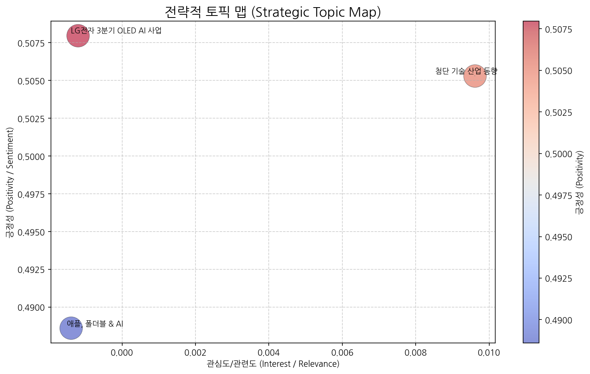
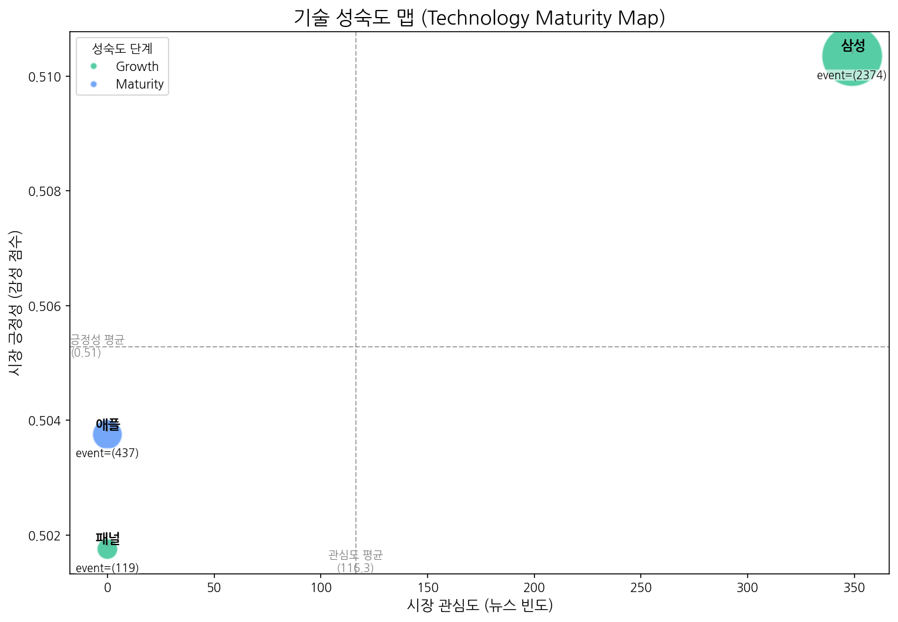
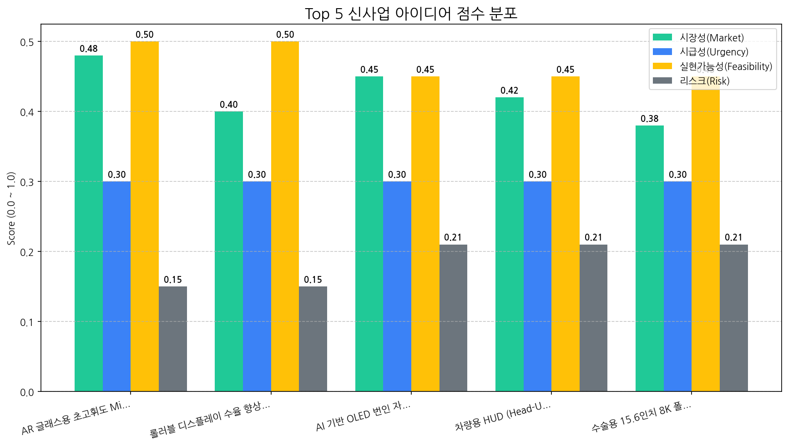

| 토픽명 | 요약 | 핵심 키워드 | |:--------------------|:---------------------------------------------------------------------------------------|:-------------| | 첨단 기술 산업 동향 | 반도체, 디스플레이(OLED, LED), AI 기술 발전과 전기차, 인도 시장을 중심으로 한 브랜드 전략 등 첨단 기술 산업 전반의 최신 동향을 다룹니다. | 2o, 브랜드, 반도체 | | 애플, 폴더블 & AI | 애플의 폴더블 기기(폰, 맥북 등) 출시 가능성과 M5 칩, AI 기술 관련 소식. 비전 프로 언급 포함. | 폴더블, 프로, 맥북 | | LG전자 3분기 OLED AI 사업 | LG전자의 3분기 실적과 OLED 패널, AI 기술 관련 사업 및 디스플레이 장비 투자 동향 분석. | oled, ai, 사업 |
| 기술 | 단계 | 판단 근거 | |:-----|:---------|:----------------------------------------------------------------------------------| | 패널 | Growth | 출시 이벤트가 투자 및 수주 이벤트보다 압도적으로 많고 시장 감성 점수가 중간 수준인 것으로 보아 성장기에 진입한 기술로 판단됩니다. | | 애플 | Maturity | 출시 이벤트는 많지만, 뉴스 언급이 없고 시장 감성 점수가 중간 수준이며, 투자가 활발한 것으로 보아 성숙기에 접어든 안정적인 기술로 판단됩니다. | | 삼성 | Growth | 높은 출시 빈도와 투자 건수를 보아 삼성 기술은 시장 성장 단계에 있으며, 뉴스 언급 빈도와 시장 감성 점수가 이를 뒷받침합니다. |
| 아이디어 | 가치 제안 | 총점 | |:-------------------------------------|:------------------------------------------------------------------------------------------------|-----:| | AR 글래스용 초고휘도 MicroLED 디스플레이 | 초고휘도로 야외 시인성 확보, 고해상도로 몰입감 있는 AR 경험 제공, 저전력으로 사용 시간 극대화, 소형 폼팩터로 AR 글래스 디자인 자유도 향상 | 3.6 | | 롤러블 디스플레이 수율 향상을 위한 AI 공정 모니터링 서비스 | AI 기반 실시간 공정 모니터링 및 불량 예측, 공정 조건 최적화, 롤러블 디스플레이 수율 향상, 생산 비용 절감 | 3.3 | | AI 기반 OLED 번인 자동 보정 기술 | AI 기반으로 번인 발생 예측 및 자동 보정, 디스플레이 수명 연장, 사용자 경험 향상, 기존 OLED 패널에 소프트웨어 방식으로 적용 가능 | 3.2 | | 차량용 HUD (Head-Up Display) 투명 OLED 패널 | 투명 OLED를 사용하여 시야 방해 최소화, 고휘도/고명암비로 주/야간 시인성 극대화, 운전자 맞춤형 정보 제공, AR HUD 대비 자연스러운 정보 오버레이 | 3.1 | | 수술용 15.6인치 8K 폴더블 OLED 디스플레이 | 8K 초고해상도로 미세 조직까지 선명하게 표현, 폴더블 디자인으로 다양한 각도에서 편리하게 사용, 3D 입체 영상 지원으로 수술 시야 확보, 휴대성 및 공간 활용성 극대화 | 2.9 || Hypothesis | Target | KPI | Owner | Due |
|---|---|---|---|---|
| 북미 빅테크 기업들은 야외 시인성이 뛰어난 AR 글래스용 초고휘도 MicroLED 디스플레이에 대한 니즈가 존재하며, 경쟁 기술 대비 가격 경쟁력을 갖춘다면 구매 의사가 있을 것이다. | 북미 빅테크 기업(AR/VR 기기 제조사) 5곳의 디스플레이 기술 담당자와 제품 기획 담당자 | 5곳 중 3곳 이상의 담당자가 경쟁 기술 대비 우수한 야외 시인성 및 가격 경쟁력에 대한 긍정적 피드백 및 PoC(Proof of Concept) 요청 | 사업개발팀 | 2025-11-02 |
| 현재 개발 중인 초고휘도 MicroLED 칩 기술이 목표 휘도(nit) 및 전력 효율(lm/W)을 달성하고, AR 글래스 적용에 적합한 소형 폼팩터로 구현 가능하다. | MicroLED 칩 개발 팀 내부 전문가 및 외부 자문단 (디스플레이 전문가 2인 이상) | 시뮬레이션 및 초기 시제품 테스트 결과, 목표 휘도 및 전력 효율 달성 가능성 80% 이상 확인, 소형 폼팩터 구현 가능성 기술 검토 완료 | 기술기획팀 | 2025-11-02 |
| MicroLED 전사 기술 고도화를 통해 AR 글래스용 디스플레이 제조에 필요한 수율(%)을 확보하고, 목표 생산 비용 내에서 제작 가능하다. | MicroLED 전사 기술 개발팀 및 생산 기술팀 | 전사 기술 고도화 로드맵 수립 및 초기 테스트 결과, 목표 수율 달성 가능성 70% 이상 확인, 초기 생산 비용 예측 결과 목표 비용 대비 10% 이내 달성 가능 | 생산기술팀 | 2025-11-02 |